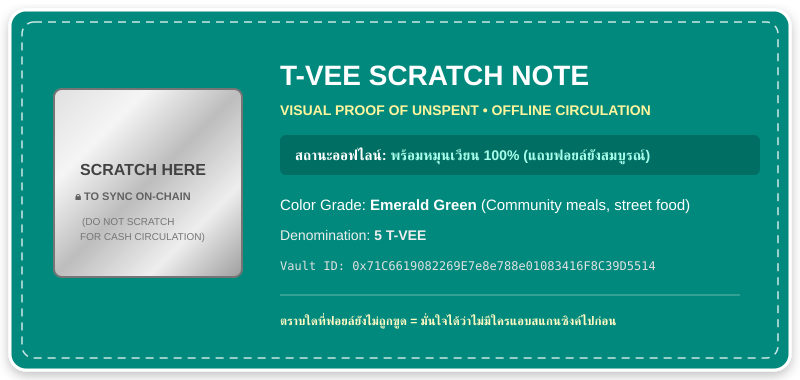
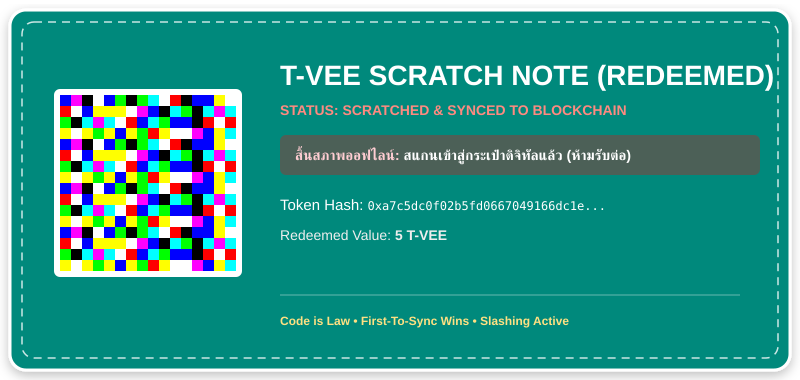
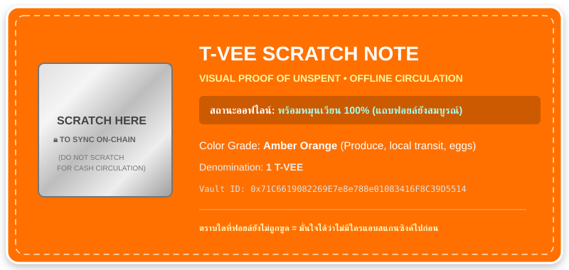
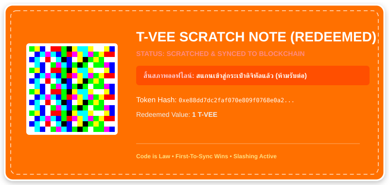
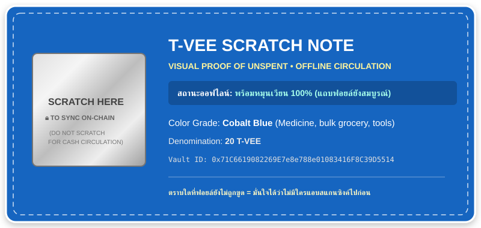
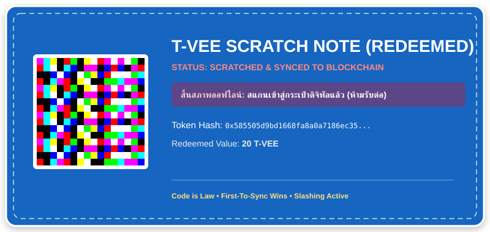
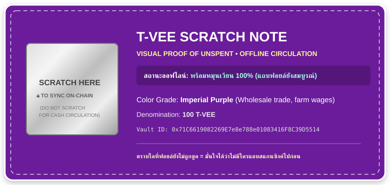
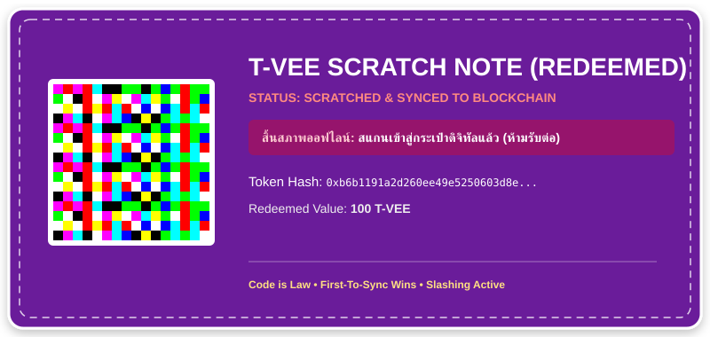

🎟️ T-VEE Scratch Card: สถาปัตยกรรมธนบัตรสีแบบบัตรขูด
Version 1.1.0 • Visual Proof of Unspent • Offline Trust 100%
💡 ปรัชญาการออกแบบบัตรขูดหมุนเวียน (Proof of Unspent):
- ก่อนขูด (แถบฟอยล์สีเงินเรียบเนียน): ชาวบ้านมั่นใจได้ 100% ด้วยตาเปล่าว่า "ไม่มีใครแอบสแกนซิงค์ไปก่อน" สามารถส่งมอบ ทอนเงิน และหมุนเวียนในตลาดสดได้เรื่อย ๆ โดยไม่ต้องต่อเน็ต
- หลังขูด (เปิดเผย JAB Code): ผู้ถือขูดออกเมื่อต้องการเปลี่ยนเป็นเงินดิจิทัลในมือถือ เมื่อสแกนแล้ว บัตรจะสิ้นสภาพออฟไลน์ทันที ป้องกัน Double-Spending
🟢 Emerald Green — 5 T-VEE (หน่วยอาหารจานเดียว / ข้าวแกง)
1. สภาพหมุนเวียนออฟไลน์ (ก่อนขูด - ฟอยล์ยังสมบูรณ์)

2. สภาพซิงค์ออนไลน์แล้ว (หลังขูด - สแกนเข้ามือถือ)

🟠 Amber Orange — 1 T-VEE (หน่วยของสดพื้นฐาน / ค่าวินมอเตอร์ไซค์)
1. สภาพหมุนเวียนออฟไลน์ (ก่อนขูด)

2. สภาพซิงค์ออนไลน์แล้ว (หลังขูด)

🔵 Cobalt Blue — 20 T-VEE (หน่วยของใช้ครัวเรือน / ค่ายา)
1. สภาพหมุนเวียนออฟไลน์ (ก่อนขูด)

2. สภาพซิงค์ออนไลน์แล้ว (หลังขูด)

🟣 Imperial Purple — 100 T-VEE (หน่วยค้าส่ง / ค่าแรงรายวัน)
1. สภาพหมุนเวียนออฟไลน์ (ก่อนขูด)

2. สภาพซิงค์ออนไลน์แล้ว (หลังขูด)
